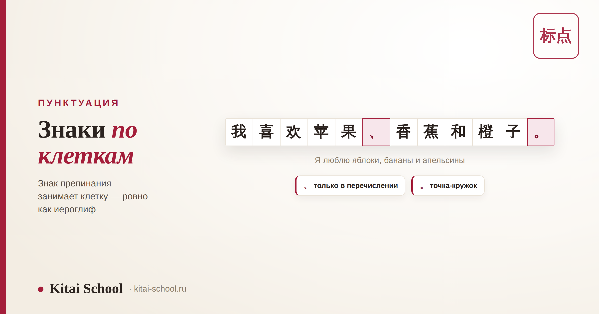
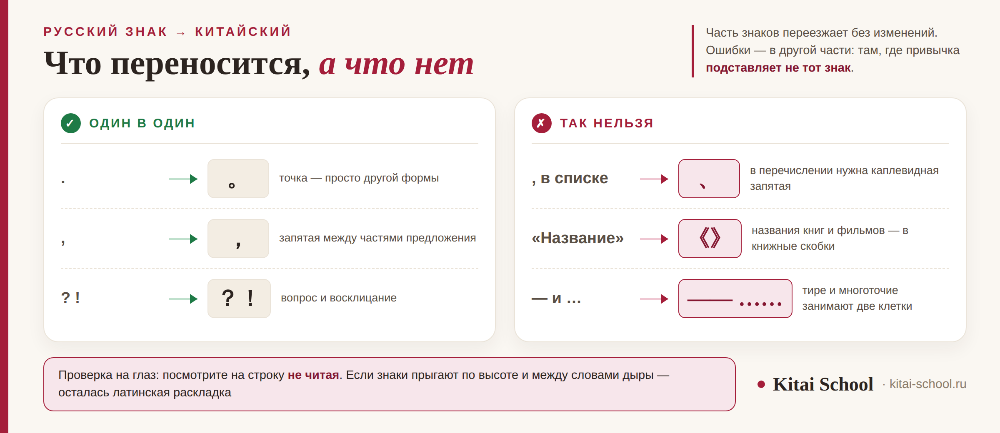

Письменность и грамматика
Курс по пунктуации китайского языка: все знаки, главные правила и нужен ли он отдельно


Начнём с честного ответа, чтобы не тянуть. Отдельного курса по пунктуации искать не нужно: тема не тянет на программу — это несколько занятий внутри обычного курса плюс регулярная правка ваших письменных работ. Зато вся система целиком помещается в один разбор, и мы её здесь и разберём.
Главное правило одно: знак занимает клетку, как иероглиф. Отсюда всё остальное — пробел после знака не ставят, тире и многоточие занимают две клетки, а знаки из латинской раскладки в китайскую строку не годятся. Отдельно стоит выучить каплевидную запятую 、: она ставится только внутри перечисления, и именно её путают чаще всего. Названия книг и фильмов берут не в кавычки, а в 《》. Русских «ёлочек» в китайском нет.
Где ошибки в знаках действительно видно
В речи пунктуации нет, поэтому кажется, что тема второстепенная. Видно её ровно в трёх местах — и все три рабочие.
| Где | Что происходит |
|---|---|
| Письменная часть экзамена | работу проверяет человек, и оформление входит в общее впечатление наравне с грамматикой |
| Деловая переписка | знаки из латинской раскладки в китайской строке видны сразу — текст выглядит небрежным |
| Любой текст на публику | пост, описание, подпись: здесь по знакам считывают, писал носитель или нет |
Ни одна из этих ошибок не мешает понять смысл. Дело в другом: они бросаются в глаза и портят впечатление от текста, который в остальном хороший. Это и обидно, потому что чинится всё быстро.
Главное правило: знак занимает клетку
Если запомнить одну вещь из всей статьи, то эту. Китайские знаки препинания полноширинные: каждый занимает столько же места, сколько иероглиф. Раньше текст писали по клеточкам, и знак получал свою клетку наравне со знаком письма. В наборе это сохранилось.
Из этого правила выводится почти всё остальное:
| Следствие | Как это выглядит |
|---|---|
| После знака не ставят пробел | пустое место уже внутри самой клетки; пробел сделает разрыв в полторы клетки |
| Тире и многоточие занимают две клетки | их так и набирают: —— и ……, а не один короткий знак |
| Знаки из латинской раскладки не годятся | они узкие, и в строке иероглифов сразу выдают чужую раскладку |
| Знак не начинает строку | при переносе он остаётся в конце предыдущей строки, а не уезжает вниз |
Практический вывод простой: ничего не нужно искать в таблице символов. Когда включён китайский ввод, обычные клавиши сами дают правильные знаки. Самая частая ошибка в переписке — это забытое переключение раскладки, а не незнание правил.
Знаки, которых нет в русском
Их немного, и часть из них встретится вам в первый же месяц.
| Знак | Название | Как называем | Когда ставится |
|---|---|---|---|
| 、 | 顿号 dùnhào | Каплевидная запятая | только между однородными членами: 苹果、香蕉、橙子 |
| 。 | 句号 jùhào | Точка-кружок | обычная точка в конце предложения, но выглядит как маленький круг |
| 《》 | 书名号 shūmínghào | Знак названия | названия книг, фильмов, статей и песен: 《西游记》 |
| —— | 破折号 pòzhéhào | Тире | занимает две клетки подряд, а не одну |
| …… | 省略号 shěnglüèhào | Многоточие | шесть точек и тоже две клетки |
| · | 间隔号 jiàngéhào | Разделительная точка | внутри иностранных имён: 弗拉基米尔·普京 |

Отдельно про 、 — тот самый знак, ради которого чаще всего и ищут курс. Он ставится только между однородными членами: 我喜欢苹果、香蕉和橙子。 Обычная запятая в этом месте не ошибка «немножко», а именно ошибка. И наоборот: разделять 、 части предложения нельзя.
Студентка готовилась к экзамену и писала сильные тексты: грамматика чистая, словарь широкий. А работы возвращались с одинаковыми пометками, и она никак не могла понять, за что.
Мы открыли её файл и посмотрели на строку внимательно. Точки были латинские, после каждой стоял пробел, перечисление шло через обычные запятые. По содержанию текст был на голову выше её группы, а выглядел как черновик, набранный второпях.
Разобрались за одно занятие: переключили раскладку, разобрали 、 и две клетки у тире. Больше мы к этой теме не возвращались. Ровно поэтому я и не верю в отдельный курс по пунктуации: это не курс, это одно занятие и потом привычка.
Знакомые знаки, которые ведут себя иначе
Вторая половина списка выглядит привычно — и тем опаснее: их ставят по русской привычке, не задумываясь.
| Знак | Название | Что это | В чём разница |
|---|---|---|---|
| ， | 逗号 dòuhào | Запятая | как русская, но не для перечисления — там нужен 、 |
| ？ | 问号 wènhào | Вопросительный знак | по смыслу как русский, по ширине — целая клетка |
| ！ | 叹号 tànhào | Восклицательный знак | то же самое: знак полной ширины |
| ： | 冒号 màohào | Двоеточие | перед перечислением, пояснением и прямой речью |
| ； | 分号 fēnhào | Точка с запятой | между частями длинного предложения, встречается реже |
| “ ” | 引号 yǐnhào | Кавычки | в материковом стандарте — вот такие; «ёлочек» в китайском нет |
Обратите внимание на первую и последнюю строку. Запятая делает всё, кроме перечисления. А кавычки в материковом стандарте выглядят как “ ”: угловые 「」 привычны на Тайване и в Гонконге, а русские «ёлочки» не используются вообще. Названия книг и фильмов в кавычки не берут — для них есть 《》.
Пять ошибок, которые делают русскоязычные
Все пять встречаются постоянно и все пять чинятся за одно занятие.
| Ошибка | Как правильно |
|---|---|
| Перечисление через обычную запятую | между однородными членами — 、 |
| Знаки из латинской раскладки: , . ? | полноширинные ，。？ при включённом китайском вводе |
| Пробел после знака | пробела нет: он уже внутри клетки |
| Короткое тире и три точки | две клетки: —— и …… |
| Название в кавычках | название — в 《》 |
Проверять себя удобно так: посмотрите на строку издалека, не читая. Если знаки «прыгают» по высоте и между словами появляются дыры — где-то осталась латинская раскладка. Ровная строка, где всё стоит по клеткам, выглядит спокойно.
Нужен ли отдельный курс: и что спрашивать у обычного
Тему целиком вы только что прочитали. Дальше нужна не программа, а правка: кто-то должен смотреть ваши письменные работы и отмечать знаки, а не только грамматику и слова.
| Пункт | Как проверить |
|---|---|
| Письменные работы правят целиком | в возврате отмечены и знаки тоже, а не только грамматика |
| Дают писать от себя | своё предложение и свой текст, а не только вставить пропущенное слово |
| Показывают, как набирать | переключение ввода и где на клавиатуре 、 и 《》 |
| Разбирают 、 отдельно | это единственный знак, которому нужно отдельное объяснение |
| Готовят к письменной части | если впереди экзамен, работы проверяют по тем же требованиям |
И про отдельные платные программы «только по пунктуации»: спросите, что в них есть сверх одного разбора. Если ответ — список знаков и упражнения на подстановку, вы получите то же, что в этой статье. Если впереди экзамен, полезнее посмотреть требования письменной части — HSK 4 и HSK 5, — а знаки подтянуть внутри общей подготовки.
Частые вопросы (FAQ)
Чем 、 отличается от обычной запятой?
Задачей. Каплевидная запятая 、 ставится только между однородными членами внутри перечисления: 苹果、香蕉、橙子 — «яблоки, бананы, апельсины». Обычная запятая ，делает всё остальное: отделяет части предложения, обращение, вводные слова. Русскоязычные почти всегда ставят ，там, где нужна 、 — это самая заметная ошибка, и по ней сразу видно, что писал иностранец.
Почему после китайских знаков препинания не ставят пробел?
Потому что пробел уже внутри самого знака. Китайские знаки полноширинные: каждый занимает столько же места, сколько иероглиф, и справа в этой клетке остаётся пустое поле. Если добавить ещё и пробел, между словами получится дыра в полторы клетки. По той же причине нельзя ставить знаки из латинской раскладки: они узкие и в строке выглядят как чужие.
Как набирать китайские знаки препинания?
Переключением раскладки, а не поиском символа в таблице. Когда включён китайский ввод, клавиши с запятой, точкой и вопросительным знаком сами дают полноширинные ，。？ — ничего искать не нужно. Каплевидная запятая обычно на клавише с обратной косой чертой, а книжные скобки 《》 набираются как угловые скобки. Отдельная привычка — проверять, что ввод действительно переключён: забытая раскладка и есть самая частая причина ошибок в переписке.
Снижают ли за пунктуацию баллы на HSK?
Отдельной строки «за пунктуацию» в оценке нет, но письменную часть проверяет человек, и оформление входит в общее впечатление от работы. На уровнях, где нужно написать своё предложение или связный текст, знаки видны сразу: точка-кружок вместо латинской точки, 、 в перечислении, отсутствие лишних пробелов. Это не то, из-за чего проваливают экзамен, но это то, что легко привести в порядок заранее.
Нужен ли отдельный курс по пунктуации?
Честно — нет. Пунктуация не тянет на отдельную программу: это тема нескольких занятий внутри обычного курса плюс регулярная правка ваших письменных работ. Гораздо важнее не найти специальный курс, а убедиться, что в вашем курсе знаки вообще правят, а не смотрят только на грамматику и слова. Если вам предлагают отдельную платную программу, стоит спросить, что в ней есть сверх одного разбора вроде этой статьи.
Какие кавычки правильные — “ ” или 「」?
Зависит от региона. В материковом Китае стандартными считаются двойные кавычки “ ”, и именно они используются в упрощённом письме и в экзаменационных материалах. Угловые 「」 привычны на Тайване и в Гонконге, а также в вертикальном наборе. Русские «ёлочки» в китайском тексте не используются вообще — это первый признак текста, набранного в русской раскладке.
Мы правим письменные работы целиком: и грамматику, и слова, и знаки. Приходите на бесплатное пробное занятие — принесите свой текст, разберём его построчно и покажем, что чинится сразу.
Или напишите слово ЗНАКИ нашему менеджеру в Telegram — подберём формат под вашу задачу.
Дальше по теме: как устроен сам знак письма — курсы по иероглифике; из чего состоит китайская письменность — буквы или иероглифы; порядок слов и рамка предложения — курс по грамматике; письмо партнёру — деловое письмо китайскому партнёру; лексика для работы — китайский язык для бизнеса; проверенные факты о языке — интересные факты о китайском; с чего начинают взрослые — курсы китайского для взрослых; занятия — индивидуальные уроки.
Источники
- ГОСТ КНР GB/T 15834 «Правила употребления знаков препинания» (标点符号用法) — состав знаков и правила их постановки.
- Практика Kitai School — правка письменных работ взрослых студентов и подготовка к письменной части экзамена.
- Официальный сайт экзамена chinesetest.cn — структура и требования уровней HSK.
Пусть строка выглядит ровно! 书写愉快！